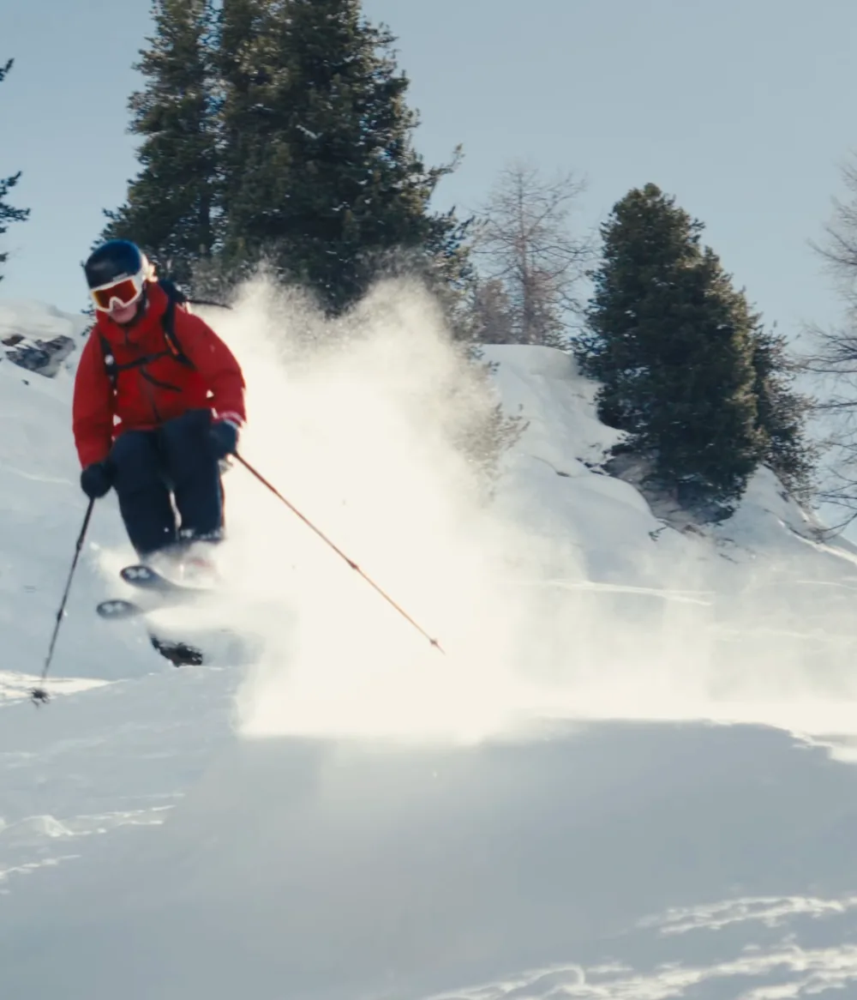
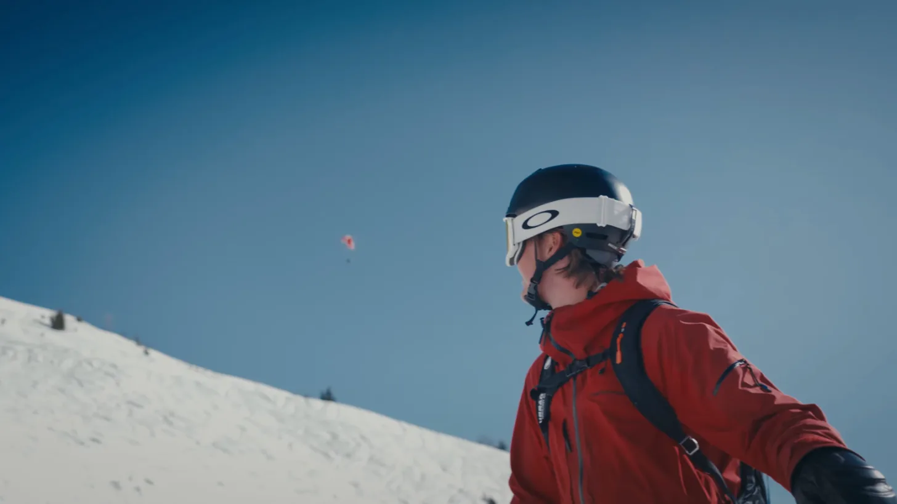

← All projects
01 / 05
For the Love of Ski
- Type
- Short film
- Year
- 2026
- Runtime
- 04:03
- Credit
- A film by Ruben
A short film cut from a season of skiing with friends. It was also Ruben's entry to Alpingaraget's video competition Vinter Edit 2026.






Watch & view